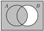
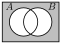
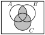
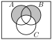

1Basic Objects and Symbols 1.1Propositional Logic Exercises
1.
Solution.
\(p\)
\(q\)
\(((p \to q) \land \neg p) \to \neg q\)
T
T
T
T
F
T
F
T
F
F
F
T
2.
Solution.
\(P\text{:}\) it’s your birthday; \(Q\text{:}\) there will be cake. \((P \vee Q) \to Q\)
Hint: you should get three T’s and one F.
Only that there will be cake.
It’s NOT your birthday!
It’s your birthday, but the cake is a lie.
3.
Solution.
\(p\)
\(q\)
\((p \vee q) \to (p \wedge q)\)
T
T
T
T
F
F
F
T
F
F
F
T
4.
Solution.
\(p\)
\(q\)
\(\neg p \wedge (q \to p)\)
T
T
F
T
F
F
F
T
F
F
F
T
If the statement is true, then both \(p\) and \(q\) are false.
5.
Hint.
Like above, only now you will need 8 rows instead of just 4.
6.
Solution.
Converse: “If I bring an umbrella then it rains today.”. Inverse: “If it doesn’t rain today then I won’t bring an umbrella.” Contrapositive: “If I won’t bring an umbrella, then it isn’t raining today”.
The conditional “Whenever I drive my car, I do not use my phone” is “If I drive my car, then I don’t use my phone.” Now find the other statements.
The conditional “When I stay up too late, it’s necessary that I sleep until noon” is “If I stay up too late, then it’s necessary that I sleep until noon.” Now find the other statements.
7.
Solution.
A and B are both lying knaves.
8.
Hint.
What happens if A is a knight and is telling the truth? What happens if A is lying? Which scenarios are impossible? What must the answer be?
9.
Hint.
The question is complicated, by not too complicated.
1.2Sets Exercises
1.
Solution.
This is a set; \(A \cap B= \{2, 4\}\)
This is a statement. It is true.
This is also a statement. It is false, since \(1 \in A\) but \(1\not\in B\)
This is a number. It’s 4.
This is a set. It’s \(\emptyset\text{.}\)
This is statement. It’s false.
2.
Solution.
False. For example, \(1\in A\) but \(1 \notin B\text{.}\)
True. Every element in \(B\) is an element in \(A\text{.}\)
False. The elements in \(C\) are 1, 2, and 3. The set\(B\) is not equal to 1, 2, or 3.
False. \(A\) has exactly 6 elements, and none of them are the empty set.
True. Everything in the empty set (nothing) is also an element of \(A\text{.}\) Notice that the empty set is a subset of every set.
Meaningless. A set cannot be less than another set.
True. \(3\) is one of the elements of the set \(C\text{.}\)
Meaningless. \(3\) is not a set, so it cannot be a subset of another set.
True. \(3\) is the only element of the set \(\{3\}\text{,}\) and is an element of \(C\text{,}\) so every element in \(\{3\}\) is an element of \(C\text{.}\)
3.
Solution.
\(A \cup B = \{1, 2, 3, 4, 5, 6\} = A\) since everything in \(B\) is already in \(A\text{.}\)
\(A \cap B = \{2, 4, 6\} = B\) since everything in \(B\) is in \(A\text{.}\)
\(B \cap C = \{2\}\) as the only element of both \(B\) and \(C\) is 2.
\(A \cap D = \emptyset\) since \(A\) and \(D\) have no common elements.
\(\bar{B \cup C} = \{5, 7, 8, 9, 10\}\text{.}\) First we find that \(B \cup C = \{1, 2, 3, 4, 6\}\text{,}\) then we take everything not in that set.
\(A \setminus B = \{1, 3, 5\}\) since the elements 1, 3, and 5 are in \(A\) but not in \(B\text{.}\) This is the same as \(A \cap \bar B\text{.}\)
\((D \cap \bar C) \cup \bar{A \cap B} = \{1, 3, 5, 7, 8, 9, 10\}.\) The set contains all elements that are either in \(D\) but not in \(C\) (i.e., \(\{7,8,9\}\)), or not in both \(A\) and \(B\) (i.e., \(\{1,3,5,7,8,9,10\}\)).
\(\emptyset \cup C = C\) since nothing is added by the empty set.
\(\emptyset \cap C = \emptyset\) since nothing can be both in a set and in the empty set.
There are many possible examples. Here is a simple one. Let \(A=\{3, 5\}\) and \(B=\{2, 3, 5, 7, 8\}\)
7.
Solution.
For example, \(A = \{1,2,3\}\) and \(B = \{1,2,3,4,5,\{1,2,3\}\}\)
8.
Solution.
\(A \cup \bar B\text{:}\)

Venn diagram of \(A\cup \bar B\text{.}\) Two circles are labeled A and B. Everything is shaded except for the small part of B that doesn’t overlap A.
\(\bar{(A \cup B)}\text{:}\)

Venn diagram of \(\bar{(A \cup B)}\text{.}\) Two circles are labeled A and B. Everything outside the two circles are shaded.
\(A \cap (B \cup C)\text{:}\)
Venn diagram of \(A \cap (B \cup C)\) Three circles are labeled A, B, and C. Where A and B is shaded and where A and C is also shaded.
\((A \cap B) \cup C\text{:}\)

Venn diagram of \((A \cap B) \cup C\text{.}\) Three circles are labeled A, B, and C. Where A and B overlap is shaded. C is also shaded completely.
\(\bar A \cap B \cap \bar C\text{:}\)
Venn diagram of \(\bar A \cap B \cap \bar C\text{.}\) Three circles are labeled A, B, and C. Only the part of B that doesn’t overlap A and doesn’t overlap C is shaded.
\((A \cup B) \setminus C\text{:}\)

Venn diagram of \((A \cup B) \setminus C\text{.}\) Three circles are labeled A, B, and C. Only those parts of A and B that do not overlap C are shaded.
9.
Solution.
One way to answer is \((A\cup B) \setminus (A\cap B)\)
There are eight possible sets. \(B\) can be any of \(\{2,3,5\}\text{,}\)\(\{1,2,3,5\}\text{,}\)\(\{2,3,4, 5\}\text{,}\)\(\{2,3,5,6\}\text{,}\)\(\{1,2,3,4,5\}\text{,}\)\(\{1,2,3,5,6\}\text{,}\)\(\{2,3, 4, 5, 6\}\text{,}\)\(\and \{1, 2, 3, 4, 5, 6\}\)
13.
Solution.
For example, \(A = \{1,2,3,4\}\) and \(B = \{5,6,7,8,9\}\) gives \(A \cup B = \{1,2,3,4,5,6,7,8,9\}\text{.}\)
14.
Solution.
There are 10 subsets that consist of a single element. For subsets consisting of exactly two elements, there are 45
15.
Solution.
There are many examples. Here’s one possibility: \(A = \{ a, b, c\}, B=\{b,c,d,e\}\text{.}\) Then the union is \(A \cup B = \{a, b, c, d, e\}\text{.}\)
16.
Hint.
Note that \(|A\cup B| = |A| + |B| - |A\cap B|\text{,}\) (can you explain why this formula is correct? Make a Venn diagram)
Solution.
The answer is no. Can you explain why?
17.
Solution.
The intersection of the set of red cards and the set of face cards is nonempty. It includes six cards: Jack of Hearts, Queen of Hearts, King of Hearts, Jack of Diamonds, Queen of Diamonds, and King of Diamonds.
18.
Solution.
No, since the set on the right contains only multiples of \(2\text{,}\) but the set on the left contains, for example, \(3\text{.}\)
No. Because this time, we have \(-2 \in 2\Z\text{,}\) but \(-2\not\in \Z^+\)
\(2\Z \cap 3\Z\) is the set of all integers which are multiples of both 2 and 3 (these are the multiples of 6). Therefore \(2\Z \cap 3\Z = \{6x \st x \in \Z )\}\text{.}\)
No. For example \((2, 2)\) and \((2,4)\) are the the relation.
Yes, each person has a unique height (at any given time).
3.
Solution.
We’d normally write \(a=b\) if \(a \mathrel{R} b\) when \(a\) and \(b\) are the same object.
Yes! Given a set \(A\text{,}\) we define the function by \(f: A \to A\) by \(f(x)=x\text{.}\)
4.
Solution.
Very little needs changed - I’m simply relabling the variables. We’ll explore relations (and their composition) in greater depth in Discrete 2.
Let \(G:A \to B\) and let \(R:B \to C\text{.}\) The composition of \(R\) and \(S\), denoted by \(R\circ S\) is defined, for all \(a \in A\text{,}\) by \((R \circ S)(a) = R(S(a))\text{.}\)
\(\displaystyle R_4 \circ R_4 = \{(x,y) \mid y \text{ is a grandparent of } x \}\)
\(\displaystyle R_5 \circ R_4 = \{(x,y) \mid y \text{ is a sibling of a parent of } x\} = \{(x,y) \mid y \text{ is an aunt/uncle of } x \}\)
\(\displaystyle R_4 \circ R_5 = \{ (x,y) \mid y \text{ is the parent of the sibling of } x\} = R_4\)
6.
Solution.
No, the function is no injective. \(2 = f(2) = f(5) = 2\) but clearly \(2 \not= 5\)
Yes, the function is surjective. The codomain is \(\{1, 2, 3, 4\}\) and each element of the codomain is mapped (the range equals the codomain)
7.
Solution.
No! \(f(1) = f(4)\) and \(1\ne 4\)
Also no, since there is no \(x\) for which \(f(x) = 2\text{.}\)
8.
Solution.
\(f\) is injective, but not surjective (since 0, for example, is never an output).
\(f\) is injective and surjective. Unlike in the previous question, every integers is an output (of the integer 4 less than it).
\(f\) is injective, but not surjective (10 is not 8 less than a multiple of 5, for example).
\(f\) is not injective, but is surjective. Every integer is an output (of twice itself, for example) but some integers are outputs of more than one input: \(f(5) = 3 = f(6)\text{.}\)
9.
Solution.
Yes, since given any integer \(c\in \Z\) we can find two other integers \(m, n\) for which \(f(m,n) = c\) for example, \(f(c,0) = c+0 = c\text{.}\)
No, since \(-1 \in \Z\) and there is no integers \(m, n\) for which \(m^2 + n^2 = -1\text{.}\)
Yes, since every integer \(m\) in the codomain is mappsed to via \(f(m,0) = m\)
Yes again, this will map to every possible integer. For example, \(f(m,0) = m\) for any integer \(m\) in the codomain.
It’s worth noting while these aren’t injective, they can be surjective.
10.
Solution.
\(f\) is injective.
Proof.
Let \(x\) and \(y\) be elements of the domain \(\Z\text{.}\) Assume \(f(x) = f(y)\text{.}\) If \(x\) and \(y\) are both even, then \(f(x) = x+1\) and \(f(y) = y+1\text{.}\) Since \(f(x) = f(y)\text{,}\) we have \(x + 1 = y + 1\) which implies that \(x = y\text{.}\) Similarly, if \(x\) and \(y\) are both odd, then \(x - 3 = y-3\) so again \(x = y\text{.}\) The only other possibility is that \(x\) is even an \(y\) is odd (or visa-versa). But then \(x + 1\) would be odd and \(y - 3\) would be even, so it cannot be that \(f(x) = f(y)\text{.}\) Therefore if \(f(x) = f(y)\) we then have \(x = y\text{,}\) which proves that \(f\) is injective.
\(f\) is surjective.
Proof.
Let \(y\) be an element of the codomain \(\Z\text{.}\) We will show there is an element \(n\) of the domain (\(\Z\)) such that \(f(n) = y\text{.}\) There are two cases: First, if \(y\) is even, then let \(n = y+3\text{.}\) Since \(y\) is even, \(n\) is odd, so \(f(n) = n-3 = y+3-3 = y\) as desired. Second, if \(y\) is odd, then let \(n = y-1\text{.}\) Since \(y\) is odd, \(n\) is even, so \(f(n) = n+1 = y-1+1 = y\) as needed. Therefore \(f\) is surjective.
11.
Hint.
Most likely, your solution will be piecewise-defined.
Solution.
\(\displaystyle f(n) = \begin{cases} -2n \amp \text{ if } n\lt0 \\ 2n+3 \amp \text{ if } n\ge0\end{cases}\)
\(\displaystyle f(n) = \begin{cases} -n \amp \text{ if } n\lt0 \\ n+1 \amp \text{ if } n\ge0\end{cases}\)
\(\displaystyle f(n) = \begin{cases} -2n \amp \text{ if } n\lt0 \\ 2n+1 \amp \text{ if } n\ge0\end{cases}\)
\(\displaystyle f(n) = n^2 + 1\)
12.
Solution.
\(f\) is not injective. To prove this, we must simply find two different elements of the domain which map to the same element of the codomain. Since \(f(\{1\}) = 1\) and \(f(\{2\}) = 1\text{,}\) we see that \(f\) is not injective.
\(f\) is not surjective. The largest subset of \(A\) is \(A\) itself, and \(|A| = 10\text{.}\) So no natural number greater than 10 will ever be an output.
\(f\inv(1) = \{\{1\}, \{2\}, \{3\}, \ldots \{10\}\}\) (the set of all the singleton subsets of \(A\)).
\(f\inv(0) = \{\emptyset\}\text{.}\) Note, it would be wrong to write \(f\inv(0) = \emptyset\) - that would claim that there is no input which has 0 as an output.
\(f\inv(12) = \emptyset\text{,}\) since there are no subsets of \(A\) with cardinality 12.
\(f\) is not injective since \(f(0) = f(1)\text{,}\) and it is not surjective since there is no solution to \(3=f(n)\) in the domain.
19.
Solution.
I’m providing a solution for the floor function. The ceiling function solution can be done very similarly. The floor function is not injective. Consider the two real numbers 2.1 and 2.5: \(\lfloor 2.1\rfloor = \lfloor 2.5\rfloor = 2\text{.}\)
The floor function is surjective, however. Let \(c\in \Z\) be an integer in the codomain. Then consider \(a = c+0.1 \in \R\text{,}\) the domain. \(\lfloor a \rfloor = \lfloor c+0.1 \rfloor = c.\)
20.
Solution.
\(x\)
0
1
2
3
4
\(f(x)\)
3
4
0
1
2
\(f\) is both injective and surjective.
Note that the range of the function \(f\) is \(\{0, 1, 2, 3, 4\}\) which is equal to the whole co-domain, which tells us it’s surjective.
\(x\)
0
1
2
3
4
\(g(x)\)
1
0
0
2
2
\(g\) is not injective since \(g(1) = g(2)\) for example. \(g\) is also not surjective since there is no solution to \(3 = g(n)\) in the domain.
Note that the range of the function \(g\) is \(\{0, 1, 2\}\) which is not equal co-domain, which tells us it’s not surjective.
2Symbolic Logic and Proofs 2.1Logical Equivalences Exercises
1.
Solution.
Make a truth table for these statements.
2.
Solution.
Make a truth table for each and compare. The statements are logically equivalent.
3.
Solution.
Let’s start with the left-hand side and work towards the right to find out.
\begin{align*}
p \to (q \lor r) \amp\equiv \neg p \lor (q \lor r) \amp \text{implication} \\
\amp\equiv \neg p \lor q \lor r \amp \text{associative; drop parens}\\
\amp\equiv \neg p \lor \neg p \lor q \lor r \amp \text{idempotent}\\
\amp\equiv \neg p \lor q \lor \neg p \lor r \amp \text{communitive}\\
\amp\equiv (\neg p \lor q) \lor (\neg p \lor r) \amp \text{associative}\\
\amp\equiv (p \to q) \lor (p \to r) \amp \text{implication}
\end{align*}
which was what we wanted to show.
4.
Solution.
Here’s an alternative solution using previous equivalences (not a truth table):
\begin{align*}
(p \to q) \land (p \to r) & \equiv (\neg p \lor q) \land (\neg p \lor r) \\
&\equiv \neg p \lor (q \land r)\\
&\equiv p \to (q \land r)
\end{align*}
\begin{align*}
x\in A \cup (B \cup C) \amp\equiv (x \in A) \lor (x \in B \cup C)\\
\amp\equiv (x \in A) \lor ((x \in B) \lor (x \in C))\\
\amp\equiv x \in A \lor x \in B \lor x \in C\\
\amp\equiv (x \in A \lor x \in B) \lor x \in C\\
\amp\equiv (x \in A \cup B) \lor x \in C\\
\amp\equiv x \in (\in A \cup B) \cup C
\end{align*}
and so \(A \cup (B\cup C) = (A \cup B) \cup C\text{.}\)
2.
Solution.
Assume \(x \in \overline{\overline{A}}\) then we have
\begin{align*}
x \in \overline{\overline{A}} \amp \equiv \neg(x \in \overline{A})\\
\amp \equiv \neg(\neg (x \in A))\\
\amp \equiv x \in A
\end{align*}
and so \(\overline{\overline{A}} = A\text{.}\)
3.
Solution.
Here we convert the expression of sets into a logical statement and apply the distributive law for logical statements.
Assume that \(x \in A \cup (B\cap C)\text{,}\) then:
\begin{align*}
x \in A \cup (B \cap C) \amp \equiv x \in A \lor (x \in B \cap C) \\
\amp \equiv x \in A \lor (x\in B \land x \in C)\\
\amp \equiv (x \in A \lor x\in B) \land (x \in A \lor \in C)\\
\amp \equiv (x \in A \cup B) \land (x \in A \cup C)\\
\amp \equiv x \in (A \cup B) \cap (A \cup C)
\end{align*}
and therefore \(A \cup (B \cap C) = (A \cup B) \cap (A \cup C)\text{.}\)
4.
Solution.
Our strategy is to first convert the statement into a logical statement and then apply DeMorgan’s law for logical statements.
Assume \(x\in \overline{A \cap B}\text{.}\) Then:
\begin{align*}
\neg (x \in A\cap B) \amp \equiv \neg (x \in A \land x \in B) \\
\amp \equiv \neg (x \in A) \lor \neg (x \in B)\\
\amp \equiv x \in \overline{A} \lor x \in \overline{B}
\end{align*}
and so \(\overline{A \cap B} = \overline{A} \cup \overline{B}\text{.}\)
5.
Solution.
Here our “trick” is to use the fact the the contrapositive is equivalent to the conditional.
Assume \(A \subseteq B\text{.}\) This means that \(x\in A \to x \in B\text{.}\)
\begin{align*}
x\in A \to x \in B \amp \equiv \neg(x\in B) \to \neg(x \in A) \\
\amp \equiv x \in \overline{B} \to x \in \overline{A}
\end{align*}
and thus \(\overline{B} \subseteq \overline{A}\text{.}\)
2.3Propositional Functions and Quantifiers Exercises
1.
Solution.
True
True
True
False
False
2.
Solution.
True
False
True
False
False
3.
Solution.
Your answer shouldn’t have \(x\) in it anywhere! Regular people don’t say “For all x if x is fast, then...” Here some some ideas (your answer may very)
All athletes are fast.
Everyone is a fast athlete.
Some fast person is an athlete.
There is a slow athlete.
4.
Solution.
Something in the garage is out of place.
Some tool is misplaced.
All tools are in excellent condition and in the correct place.
5.
Solution.
\begin{align*}
\neg \exists x \forall y (\neg O(x) \vee E(y)) \amp \equiv \forall x \neg \forall y (\neg O(x) \lor E(y))\\
\amp \equiv \forall x \exists y \neg (\neg O(x) \lor E(y))\\
\amp \equiv \forall x \exists y \neg \neg O(x) \land \neg E(y)\\
\amp \equiv \forall x \exists y O(x) \land \neg E(y)
\end{align*}
Applying DeMorgan’s laws many, many times and noting that the opposite of \(x\lt a\) is \(x \ge a\text{:}\)
\begin{align*}
\amp\neg \forall x \neg \forall y \neg(x \lt y \wedge \exists z (x \lt z \vee y \lt z)) \\
\amp\equiv \neg \forall x \neg \forall y \neg(x \lt y \wedge \exists z (x \lt z \vee y \lt z)) \\
\amp \equiv \exists x \neg \neg \forall y \neg(x \lt y \wedge \exists z (x \lt z \vee y \lt z)) \\
\amp \equiv \exists x \forall y \neg(x \lt y \wedge \exists z (x \lt z \vee y \lt z)) \\
\amp \equiv \exists x \forall y \neg(x \lt y ) \lor \neg ( \exists z (x \lt z \vee y \lt z)) ) \\
\amp \equiv \exists x \forall y \neg(x \lt y ) \lor \forall z \neg (x \lt z \vee y \lt z)) ) \\
\amp \equiv \exists x \forall y \neg(x \lt y ) \lor \forall z \neg (x \lt z) \land \neg (y \lt z))) \\
\amp \equiv \exists x \forall y (x \ge y ) \lor \forall z (x \ge z) \land (y \ge z)))
\end{align*}
This statement can be written \(\exists n \neg \exists x (x \le n)\text{.}\) It can be simplified as \(\exists n \forall x \neg (x \le n)\text{,}\) and even further as \(\exists n \forall x (x \gt n)\)
This statement can be written \(\neg \forall n \exists x \exists y (x \lt n \lt y)\)
\begin{align*}
\neg \forall n \exists x \exists y (x \lt n \lt y) \amp \equiv \exists n \neg \exists x \exists y (x \lt n \lt y) \\
\amp \equiv \exists n \forall x \neg \exists y (x \lt n \lt y) \\
\amp \equiv \exists n \forall x \forall y \neg (x \lt n \lt y)
\end{align*}
6.
Solution.
Let \(c\) come from the universe of colleges in the US, \(b\) be from the universe of buildings on a chosen campus and \(r\) be the rooms in a chosen building.
We have to first select a college, then find the building on that campus:
\(\exists c \exists b \forall r (b \text{ on the campus of } c \text{ in which } r \text{ is painted white})\)
Start with the negation on the left and apply DeMorgan’s laws
\begin{align*}
\amp \neg \exists c \exists b \forall r (b \text{ on the campus of } c \text{ in which } r \text{ is painted white})\\
\amp \equiv \forall c \forall b \exists r \neg(b \text{ on the campus of } c \text{ in which } r \text{ is painted white})
\end{align*}
On every campus in the US, every building has at least one room that isn’t painted white.
2.4Logical Arguments Exercises
1.
Solution.
The deduction rule is valid. To see this, make a truth table which contains \(p \vee q\) and \(\neg p\) (and \(p\) and \(q\) of course). Look at the truth value of \(q\) in each of the rows that have \(p \vee q\) and \(\neg p\) true.
2.
Solution.
This is valid. Make a truth table.
3.
Solution.
It isn’t; make a truth table and see \((((p \land q) \to r) \land (\neg p \lor \neg q)) \to \neg r\) isn’t a tautology.
6.
Solution.
This is an argument of the form:
\(\text{Superman saves} \lor \text{Lois dies}\)
\(\text{Superman saved}\)
\(\therefore \neg \text{Lois didn't die}\)
This is a fallacy. In fact, it’s the fallacy of denying the hypothesis in disguise. Rewrite the disjunction as an implication to see this:
Let the universe of discourse be all creatures, \(L(x)\) be the statement “\(x\) is a lion,” \(C(x)\) be “\(x\) drinks coffee,” and \(F(x)\) is “\(x\) is fierce.”
8.
Hint.
Make a truth table.
Solution.
The argument has three propositional variables and is of the form:
\(\text{wages increase} \to \text{inflation}\)
\(\neg\text{inflation} \to \neg \text{cost of living increase}\)
\(\text{wages increase}\)
\(\therefore \text{cost of living increases}\)
... now make a truth table.
2.5An introduction to proofs Exercises
1.
Solution.
For all integers \(a\) and \(b\text{,}\) if \(a\) or \(b\) is not even, then \(a+b\) is not even.
For all integers \(a\) and \(b\text{,}\) if \(a\) and \(b\) are even, then \(a+b\) is even.
There are numbers \(a\) and \(b\) such that \(a+b\) is even but \(a\) and \(b\) are not both even.
False. For example, \(a = 3\) and \(b = 5\text{.}\)\(a+b = 8\text{,}\) but neither \(a\) nor \(b\) are even.
False, since it is equivalent to the original statement.
True. Let \(a\) and \(b\) be integers. Assume both are even. Then \(a = 2k\) and \(b = 2j\) for some integers \(k\) and \(j\text{.}\) But then \(a+b = 2k + 2j = 2(k+j)\) which is even.
True, since the statement is false.
2.
Solution.
Direct proof.
Proof.
Let \(n\) be an integer. Assume \(n\) is even. Then \(n = 2k\) for some integer \(k\text{.}\) Thus \(8n = 16k = 2(8k)\text{.}\) Therefore \(8n\) is even.
The converse is false. That is, there is an integer \(n\) such that \(8n\) is even but \(n\) is odd. For example, consider \(n = 3\text{.}\) Then \(8n = 24\) which is even but \(n = 3\) is odd.
3.
Hint.
Hint: What implication follows from the given proof?
4.
Solution.
Assume that \(n\) is a prime number. \(\dots\) Therefore \(n\) is solitary.
Assume that \(n\) is not solitary. \(\dots\) Therefore \(n\) is a prime number by contraposition.
Assume that \(n\) is a prime number and is not solitary. \(\dots\) This contradicts our assumption. Thus if \(n\) is a prime number, \(n\) is solitary.
5.
Solution.
Proof by contradiction. Start of proof: Assume, for the sake of contradiction, that there are integers \(x\) and \(y\) such that \(x\) is a prime greater than 5 and \(x = 6y + 3\text{.}\) End of proof: … this is a contradiction, so there are no such integers.
Direct proof. Start of proof: Let \(n\) be an integer. Assume \(n\) is a multiple of 3. End of proof: Therefore \(n\) can be written as the sum of consecutive integers.
Proof by contrapositive. Start of proof: Let \(a\) and \(b\) be integers. Assume that \(a\) and \(b\) are even. End of proof: Therefore \(a^2 + b^2\) is even.
6.
Hint.
If a number isn’t a multiple of three, then it’s either 1 more than a multiple of three or 2 more than a multiple of three, that is, you’ll have two cases, either \(n=3k+1\) or \(3k+2\text{.}\)
Solution.
Proof.
Proof by contraposition: Assume that \(n\) is not a multiple of three. Then:
Case 1: There exists an integer \(k\) such that \(n =
3k+1\text{.}\) Consider:
Thus, we have proven that if \(n^2\) is a multiple of three, then \(n\) is a multiple of three by contraposition.
7.
Solution.
Proof.
Suppose \(\sqrt{3}\) were rational. Then \(\sqrt{3} = \frac{a}{b}\) for some integers \(a\) and \(b \ne 0\text{.}\) Without loss of generality, assume \(\frac{a}{b}\) is reduced. Now
So \(a^2\) is a multiple of 3. This can only happen if \(a\) is a multiple of 3, so \(a = 3k\) for some integer \(k\text{.}\) Then we have
\begin{equation*}
3b^2 = 9k^2
\end{equation*}
\begin{equation*}
b^2 = 3k^2
\end{equation*}
So \(b^2\) is a multiple of 3, making \(b\) a multiple of 3 as well. But this contradicts our assumption that \(\frac{a}{b}\) is in lowest terms.
Therefore, \(\sqrt{3}\) is irrational.
8.
Solution.
Proof.
(this is a direct proof): Assume that \(a\) is even \(b\) is a multiple of three. Then there exist integers \(k\) and \(l\) such that \(a=2k\) and \(b=3l\text{.}\) Then \(ab = (2k)(3l) = 6kl\text{.}\) Thus \(ab\) is a multiple of six.
The converse is “If \(ab\) is a multiple of six, then \(a\) is even and \(b\) is a multiple of three.”
This is false. For example, \(ab = 6\) where \(a = 6\) and \(b=1\text{.}\)
9.
Solution.
We will prove the contrapositive: if \(n\) is even, then \(5n\) is even.
Proof.
Let \(n\) be an arbitrary integer, and suppose \(n\) is even. Then \(n = 2k\) for some integer \(k\text{.}\) Thus \(5n = 5\cdot 2k = 10k = 2(5k)\text{.}\) Since \(5k\) is an integer, we see that \(5n\) must be even. This completes the proof.
10.
Solution.
Proof.
“\(\to\)” Assume that \(x = y\text{,}\) and consider:
This shows that if \(xy=\dfrac{(x+y)^2}{4}\text{,}\) then \(x=y\text{.}\)
11.
Solution.
We give a proof by contradiction.
Proof.
Suppose, contrary to stipulation that \(\log(7)\) is rational. Then \(\log(7) = \frac{a}{b}\) with \(a\) and \(b \ne 0\) integers. By properties of logarithms, this implies
But this is impossible as any power of 7 will be odd while any power of 10 will be even. Therefore, \(\log(7)\) is irrational.
12.
Solution.
Assume, to the contrary that \(p\to q\) is false, that is, we assume that \(\neg p\to q\) or \(p \land \neg q\text{.}\)
Therefore, \(p\to q\) is true by contradiction.
13.
Hint.
Try a proof by contradiction.
Solution.
The negation of the statement is \(a^2 + b^2 = c^2\) and both \(a\) and \(b\) are odd.
Proof.
Assume that \(a\) and \(b\) are both odd and that \(a^2 +b^2 = c^2\text{.}\) Then there exist integers \(k\) and \(l\) such that \(a=2k+1\) and \(b=2k+1\text{.}\)
This is a contradiction as we have a multiple of four being equal to something which is not a multiple of four. Thus, our original assumption was incorrect and therefore if \(a^2 + b^2 = c^2\text{,}\) we conclude that one of \(a\) or \(b\) is even.
14.
Solution.
Proof.
Assume, to the contrary, that there is an integer solution, \((a, b)\text{,}\) to the equation \(x^2 = 4y + 3\) We’ll split this into four cases:
Case 1: \(x\) is odd and \(y\) is even. Then there exist integers \(k\) and \(l\) such that \(x=2k+1\) and \(y = 2l\text{.}\) Plugging this into the equation, we have:
This is not possible, as 2 is not a multiple of 4.
Case 2: \(x\) is even and \(y\) is odd. Then there exist integers \(k\) and \(l\) such that \(x=2k\) and \(y = 2l+1\text{.}\) Plugging this into the equation, we have:
This is not possible, as 7 is not a multiple of 4.
Case 3: \(x\) and \(y\) are both even. Then there exist integers \(k\) and \(l\) such that \(x=2k\) and \(y = 2l\text{.}\) Plugging this into the equation, we have:
This is not possible, as 3 is not a multiple of 4.
Case 4: \(x\) and \(y\) are both odd. Then there exist integers \(k\) and \(l\) such that \(x=2k\) and \(y = 2l\text{.}\) Plugging this into the equation, we have:
This is also not possible, as 6 is not a multiple of 4.
Since we’ve exhausted every possible combination of integer solutions, we conclude that there is no integer solution to the equation \(x^2 = 4y+3\text{.}\)
2.6Chapter Review
Exercises
2.6.1.
Solution.
\(p\)
\(q\)
\(r\)
\(\neg p \to (q \wedge r)\)
T
T
T
T
T
T
F
T
T
F
T
T
T
F
F
T
F
T
T
T
F
T
F
F
F
F
T
F
F
F
F
F
2.6.2.
Solution.
Peter is not tall and Robert is not skinny. You must be in row 6 in the truth table above.
2.6.3.
Solution.
Yes. To see this, make a truth table for each statement and compare.
2.6.4.
Solution.
Make a truth table that includes all three statements in the argument:
\(p\)
\(q\)
\(r\)
\(p \to q\)
\(p \to r\)
\(p \to (q \wedge r)\)
T
T
T
T
T
T
T
T
F
T
F
F
T
F
T
F
T
F
T
F
F
F
F
F
F
T
T
T
T
T
F
T
F
T
T
T
F
F
T
T
T
T
F
F
F
T
T
T
Notice that in every row for which both \(p \to q\) and \(p \to r\) is true, so is \(p \to (q \wedge r)\text{.}\) Therefore, whenever the premises of the argument are true, so is the conclusion. In other words, the deduction rule is valid.
2.6.5.
Solution.
Negation: The power goes off and the food does not spoil.
Converse: If the food spoils, then the power went off.
Contrapositive: If the food does not spoil, then the power did not go off.
Negation: The door is closed and the light is on.
Converse: If the light is off then the door is closed.
Contrapositive: If the light is on then the door is open.
Negation: \(\exists x (x \lt 1 \wedge x^2 \ge 1)\)
Converse: \(\forall x( x^2 \lt 1 \to x \lt 1)\)
Contrapositive: \(\forall x (x^2 \ge 1 \to x \ge 1)\text{.}\)
Negation: There is a natural number \(n\) which is prime but not solitary.
Converse: For all natural numbers \(n\text{,}\) if \(n\) is solitary, then \(n\) is prime.
Contrapositive: For all natural numbers \(n\text{,}\) if \(n\) is not solitary then \(n\) is not prime.
Negation: There is a function which is differentiable and not continuous.
Converse: For all functions \(f\text{,}\) if \(f\) is continuous then \(f\) is differentiable.
Contrapositive: For all functions \(f\text{,}\) if \(f\) is not continuous then \(f\) is not differentiable.
Negation: There are integers \(a\) and \(b\) for which \(a\cdot b\) is even but \(a\) or \(b\) is odd.
Converse: For all integers \(a\) and \(b\text{,}\) if \(a\) and \(b\) are even then \(ab\) is even.
Contrapositive: For all integers \(a\) and \(b\text{,}\) if \(a\) or \(b\) is odd, then \(ab\) is odd.
Negation: There are integers \(x\) and \(y\) such that for every integer \(n\text{,}\)\(x \gt 0\) and \(nx \le y\text{.}\)
Converse: For every integer \(x\) and every integer \(y\) there is an integer \(n\) such that if \(nx > y\) then \(x > 0\text{.}\)
Contrapositive: For every integer \(x\) and every integer \(y\) there is an integer \(n\) such that if \(nx \le y\) then \(x \le 0\text{.}\)
Negation: There are real numbers \(x\) and \(y\) such that \(xy = 0\) but \(x \ne 0\) and \(y \ne 0\text{.}\)
Converse: For all real numbers \(x\) and \(y\text{,}\) if \(x = 0\) or \(y = 0\) then \(xy = 0\)
Contrapositive: For all real numbers \(x\) and \(y\text{,}\) if \(x \ne 0\) and \(y \ne 0\) then \(xy \ne 0\text{.}\)
Negation: There is at least one student in Math 321 who does not understand implications but will still pass the exam.
Converse: For every student in Math 321, if they fail the exam, then they did not understand implications.
Contrapositive: For every student in Math 321, if they pass the exam, then they understood implications.
2.6.6.
Solution.
The statement is true. If \(n\) is an even integer less than or equal to 7, then the only way it could not be negative is if \(n\) was equal to 0, 2, 4, or 6.
There is an integer \(n\) such that \(n\) is even and \(n \le 7\) but \(n\) is not negative and \(n \not\in \{0,2,4,6\}\text{.}\) This is false, since the original statement is true.
For all integers \(n\text{,}\) if \(n\) is not negative and \(n \not\in\{0,2,4,6\}\) then \(n\) is odd or \(n > 7\text{.}\) This is true, since the contrapositive is equivalent to the original statement (which is true).
For all integers \(n\text{,}\) if \(n\) is negative or \(n \in \{0,2,4,6\}\) then \(n\) is even and \(n \le 7\text{.}\) This is false. \(n = -3\) is a counterexample.
2.6.7.
Solution.
For any number \(x\text{,}\) if it is the case that adding any number to \(x\) gives that number back, then multiplying any number by \(x\) will give 0. This is true (of the integers or the reals). The “if” part only holds if \(x = 0\text{,}\) and in that case, anything times \(x\) will be 0.
The converse in words is this: for any number \(x\text{,}\) if everything times \(x\) is zero, then everything added to \(x\) gives itself. Or in symbols: \(\forall x (\forall z (x \cdot z = 0) \to \forall y (x + y = y))\text{.}\) The converse is true: the only number which when multiplied by any other number gives 0 is \(x = 0\text{.}\) And if \(x = 0\text{,}\) then \(x + y = y\text{.}\)
The contrapositive in words is: for any number \(x\text{,}\) if there is some number which when multiplied by \(x\) does not give zero, then there is some number which when added to \(x\) does not give that number. In symbols: \(\forall x (\exists z (x\cdot z \ne 0) \to \exists y (x + y \ne y))\text{.}\) We know the contrapositive must be true because the original implication is true.
The negation: there is a number \(x\) such that any number added to \(x\) gives the number back again, but there is a number you can multiply \(x\) by and not get 0. In symbols: \(\exists x (\forall y (x + y = y) \wedge \exists z (x \cdot z \ne 0))\text{.}\) Of course since the original implication is true, the negation is false.
2.6.8.
Solution.
If you have lost weight, then you exercised.
If you exercise, then you will lose weight.
If you are American, then you are patriotic.
If you are patriotic, then you are American.
If a number is rational, then it is real.
If a number is not even, then it is prime. (Or the contrapositive: if a number is not prime, then it is even.)
If the Broncos don’t win the Super Bowl, then they didn’t play in the Super Bowl. Alternatively, if the Broncos play in the Super Bowl, then they will win the Super Bowl.
2.6.9.
Solution.
\((\neg p \vee q) \wedge (\neg r \vee (p \wedge \neg r))\text{.}\)
\(\forall x \forall y \forall z (z = x+y \wedge \forall w (x-y \ne w))\text{.}\)
2.6.10.
Solution.
Direct proof.
Proof.
Let \(n\) be an integer. Assume \(n\) is odd. So \(n = 2k+1\) for some integer \(k\text{.}\) Then
Since \(7k + 3\) is an integer, we see that \(7n\) is odd.
The converse is: for all integers \(n\text{,}\) if \(7n\) is odd, then \(n\) is odd. We will prove this by contrapositive.
Proof.
Let \(n\) be an integer. Assume \(n\) is not odd. Then \(n = 2k\) for some integer \(k\text{.}\) So \(7n = 14k = 2(7k)\) which is to say \(7n\) is even. Therefore \(7n\) is not odd.
3Some Classic Number Theory 3.1Divisibility and Congruences Exercises
1.
Hint.
If \(m \divides (b-a)\text{,}\) how can we write that \(m \divides (a-b)\text{?}\)
2.
Solution.
Proof.
Assume that \(a, b, c\) are integers with \(a \ne 0\) and \(c\ne 0\) such that \(ac \divides bc\text{.}\) Then there exists an integer \(m\) such \(bc = acm\)
Since \(c \ne 0\text{,}\) we can divide both sides of the equation by \(c\text{,}\) yielding the equality \(b = am\text{.}\) Thus \(a \divides b\text{.}\)
3.
Solution.
\(\displaystyle 17 = 9\cdot 1 + 8 \)
\(\displaystyle 1234 = 23 \cdot 53 + 15\)
\(\displaystyle 0 = 13 \cdot 0 + 0\)
\(\displaystyle 8 = 1 \cdot 8 + 0\)
4.
Solution.
Since \(37 - 3 = 34\) is not divisible by 7, we conclude \(37 \not\equiv 3\pmod 7\)
Since \(66 - 3 = 63\) is divisible by 7, we conclude \(66 \equiv 3\pmod 7\)
Since \(-17 - 3 = -20\) is not divisible by 7, we conclude \(-17 \not \equiv 3\pmod 7\)
Since \(-67 - 3 = -70\) is divisible by 7, we conclude \(-67 \equiv 3\pmod 7\)
Since \(80 - 3 = 77\) is divisible by 7, we conclude \(80 \equiv 3\pmod 7\)
5.
Solution.
These numbers are \(-1, -26, -51, -76, 24, 49, 74, 99,\) all numbers that are of the form \(-1 + 25 \cdot k\) for integers \(k\text{.}\)
6.
Solution.
10
8
0
6
0
7.
Solution.
One possible counterexample is \(a = 2, b=4, c=4, and m=6\text{.}\) Certainly \(2\cdot 3 \equiv 4 \cdot 3 \pmod 6\) but \(2 \not \equiv 4 \pmod 6\text{.}\)
One possible counterexample here is \(a = 2, b=7, c=7, b=2, m=5\text{.}\) Then we can see \(2\equiv 7\pmod 5\) satisfies both parts of the hypothesis, but \(2^7 \equiv 3 \pmod 5\) while \(7^2 \equiv 4 \pmod 5\text{.}\)
3.2Prime Numbers Exercises
1.
Solution.
\(\displaystyle 39 = 3\cdot 13\)
\(\displaystyle 125 = 5^3 \)
\(101\) is prime - trial divide by 2, 3, 5, 7
\(\displaystyle 143 = 11\cdot 13 \)
\(\displaystyle 289 = 17^2\)
\(\displaystyle 899 = 29 \cdot 31\)
2.
Solution.
Recall \(10! = 10 \cdot 9 \cdot 8 \cdot 7 \cdot \dots \cdot 2 \cdot 1\text{.}\) So we can do the following:
This question is of the form “if \(n\) is a prime number greater than three, then either \(n=6k+1\) or \(n=6k-1\) for some integer \(k\)”.
Proof.
(by contraposition). Assume that \(n\) is not a number of the form \(n=6k+1\) or \(n=6k-1\) for some integer \(k\text{.}\) This gives us four total cases:
Case 1: Assume \(n=6k\) for some integer \(k\text{.}\) Then \(n\) is not a prime number, since \(n\) is divisible by both 2 and 3.
Case 2: Assume \(n = 6k+2 = 2(3k+1)\) for some integer \(k\text{.}\) Then \(n\) is divisible by 2 and is hence not prime.
Case 3: assume \(n = 6k+3 = 3(2k+1)\) for some integer \(k\text{.}\) then \(n\) is divisible by 3 and is hence not prime.
Case 4: assume \(n = 6k+4 = 2(3k+2)\) for some integer \(k\text{.}\) then \(n\) is divisible by 2 and is hence not prime.
Thus if \(n\) is not of the form \(n=6k+1\) or \(n=6k-1\) for some integer \(k\text{,}\)\(n\) is not prime. By contraposition, if \(n\) is a prime greater than three then \(n\) is of the form either \(n=6k+1\) or \(n=6k-1\) for some integer \(k\text{.}\)
5.
Hint.
What happens if we assume that every prime divisor of \(n\) is bigger than \(\sqrt{n}\text{?}\)
Solution.
Our proof will go like this: factor \(n\) into three parts, \(p_1, p_2, \and b\) where \(p_1 \and p_2\) are prime and \(b\) is whatever is left with the factorization, such as \(10 = 2\cdot5\cdot1\) where \(b=1\) or \(60=2\cdot5\cdot6\) where \(b=6\text{,}\) but assuming those prime factors are bigger than \(\sqrt{n}\text{,}\) and look for the contradiction.
Proof.
Assume, to the contrary, that every prime divisor of \(n\) is greater than \(\sqrt{n}\text{.}\) Since \(n\) is composite, it has at least two prime factors, \(p_1, p_2\) so that \(n = p_1 p_2 b\) where \(b\) is some positive integer. But since \(p_1 \and p_2\) are a prime divisors of \(n\text{,}\) by our assumption, \(p_1 \gt \sqrt{n} \and p_2 \gt \sqrt{n}\text{.}\) So:
\begin{equation*}
n = p_1 p_2 b \gt \sqrt{n} \cdot \sqrt{n} \cdot b = nb
\end{equation*}
But since \(n\gt 1 \) and \(b\in \Z^+\text{,}\)\(n\gt nb\) is a contradiction. This means our original assumption, that every prime factor of \(n\) was greater than \(\sqrt{n}\) was wrong, and therefore we conclude that \(n\) has a prime factor less than \(\sqrt{n}\text{.}\)
3.3GCDs and The Euclidean Algorithm Exercises
1.
Solution.
\(12=36(-1)+48(\)1)
\(1=21(69)+724(\)-2)
\(1=60(-21)+97(\)13)
\(\displaystyle 1=5(-5)+26(1)\)
2.
Solution.
\(\gcd(412, 32) = 4\text{.}\) We can right it as the linear combination: \(4=412(-1) + 32(13)\)
3.
Solution.
\(\gcd(780, 150) = 30\text{.}\) We can right the gcd as the linear combination \(30=780(1) + 150(-5)\)
4.
Hint.
Try looking at each pair of numbers separately.
Solution.
\(\gcd(70, 98, 108) = 2\)
3.4Multiplicative Inverses Exercises
1.
Solution.
\(\displaystyle x \equiv 1 \pmod 8\)
\(\displaystyle x \equiv 20 \pmod{22}\)
\(\displaystyle x \equiv 18 \pmod{26}\)
2.
Solution.
Here, since the coefficient of \(x\) isn’t relatively prime to the modulus there are either multiple answers per modulus or no solution.
Each of \(x \equiv 2 \pmod{9}\text{,}\)\(x\equiv 5 \pmod{9}\text{,}\) and \(x \equiv 8 \pmod{9}\) satisfy the given equation. We can summarize this as \(x \equiv 2 \pmod{3}\)
There is no solution to this equality. No multiple of 4 will ever have a remainder of 3 modulo 8.
3.
Solution.
Since \(\gcd(3,26) = 1\text{,}\) there is a unique inverse. Using the Euclidean Algorithm we find that \(3^{-1} \equiv 9 \pmod{26}\text{.}\) Doing the algebra:
\begin{align*}
3x \amp= 19 \pmod{26}\\
(3^{-1})3x \amp=(3^{-1}) 19 \pmod{26}\\
x \amp\equiv (9) 19 \pmod{26}\\
x \amp\equiv 171 \pmod{26}\\
x \amp\equiv 15 \pmod{26}
\end{align*}
is the unique solution.
Here \(\gcd(13, 26) = 2\) so there is no unique solution. Instead, there are either no solutions or two solutions! But since the gcd doesn’t divide \(7\text{,}\) there are in fact no solutions to this congruence.
Since \(\gcd(8, 426) = 2\text{.}\) Like the previous question there are either no solutions or two solutions. This time since the gcd does divide 16, we will have two solutions! The first is obviously \(x=2\text{,}\) and the second will be, applying Note 3.4.12:
\begin{align*}
x \amp= 2 + \dfrac{426}{2}\\
\amp= 215
\end{align*}
This time the modulus is 425, so we have \(\gcd(425, 8) = 1\) meaning a unique solution exists the system. The Euclidean algorithm finds that \(8^{-1} = -53 \pmod{425}\text{,}\) and solving the expression gives:
\begin{align*}
8x \amp= 16 \pmod{426}\\
(8^{-1})8x \amp=(8^{-1}) 16 \pmod{425}\\
x \amp\equiv (-53) 16 \pmod{425}\\
x \amp\equiv -848 \pmod{425}\\
x \amp\equiv 2 \pmod{425}
\end{align*}
... which actually is both obvious and hilarious. It shows that even if we don’t notice the obvious solution, the method will give us the correct result!
This time, as before, \(\gcd(8, 426) = 2\text{,}\) so there are either zero or two solutions. But since there the gcd doesn’t divide \(23\text{,}\) there is no solution to the congruence.
4.
Solution.
To have an inverse modulo \(n\text{,}\) a number \(a\) must be relatively prime to \(n\)
To have the property that every number has an inverse modulo \(n\text{,}\) the number \(n\) must be prime
Not a solution, but a hint - take each example and exercise that had multiple solutions and subtract the solutions. What do you notice?
3.5Modular exponentiation Exercises
1.
Solution.
Here are the numeric answers - but be sure you can do the process!
81
436
22
3.6Application: Encryption Basic Cipher Examples
Exercises
1.
Solution.
“I can always trust you, Brutus.”
2.
Solution.
Removing spaces from the words and capitalizing everything: “NYZAXMOORN”. The integer values are 13, 24, 25, 0, 23, 12, 14, 14, 17, 13.
3.
Solution.
“Awesome”.
4Sequences, Recurrence, and Induction 4.1Sequences and Series Exercises
1.
Solution.
\(\displaystyle \{4, 5, 7, 11, 19\}\)
\(\displaystyle \{ 0, 1, 8, 81, 1024 \}\)
\(\displaystyle \{ 0, 1, 2, 3, 4\}\)
\(\displaystyle \{2, 12, 72, 432, 2592 \}\)
\(\displaystyle \{1, 2, 5, 11, 26\}\)
2.
Solution.
Yes
No
No
Yes
3.
Solution.
\(\displaystyle a_n = 2\cdot 3^n\)
\(\displaystyle a_n = \dfrac{n^2 + n + 2}{2}\)
\(\displaystyle a_n = n!\)
4.
Solution.
1533
510
8
510
3825
5.
Solution.
This one’s a lot of fun, so let’s do it in a lot of detail. This is approach Blaise Pascal used to discover the formula in his 1654 Traité du triangle arithmétique.
Let \(a_n = (n+1)^3\text{.}\) Then from Example 4.1.14, we have that:
We have from Example 4.1.15 that \(\displaystyle \sum_{j=1}^n j = \dfrac{n(n+1)}{2}\) and if we add \(1\) a total of \(n\) times, we have \(\displaystyle \sum_{j=1}^n 1 = n\text{.}\) Plugging these in, we find:
which “telescopes” to \(a_n - a_0 = 2^{n+1} - 2\text{.}\) Substituting \(a_0 = 5\) and solving for \(a_n\) completes the solution.
3.
Solution.
We claim \(a_n = 4^n\) works. Plug it in: \(4^n = 3(4^{n-1}) + 4(4^{n-2})\text{.}\) This works - just simplify the right-hand side.
4.
Solution.
By the Characteristic Root Technique. \(a_n = 4^n + (-1)^n\text{.}\)
5.
Solution.
\(a_n = \frac{13}{5}(4)^n + \frac{12}{5}(-1)^n\)
6.
Solution.
The recurrence is \(a_n = 3a_{n-1} + 4a_{n-2}\text{.}\) The solution with the given initial conditions is \(a_n = \frac{4^{n+1}}{5} + \frac{(-1)^n}{5}\)
7.
Solution.
\(a_n = 3(8)^n + 2(-5)^n\)
8.
Solution.
\(a_n = 42 (7)^n - 24(-3)^n\) you could write \(a_n = 6(7)^{n+1} + 8(-3)^{n+1}\)
4.3Mathematical Induction Exercises
1.
Solution.
Proof.
We must prove that \(1 + 2 + 2^2 + 2^3 + \cdots +2^n = 2^{n+1} - 1\) for all \(n \in \N\text{.}\) Thus let \(P(n)\) be the statement \(1 + 2 + 2^2 + \cdots + 2^n = 2^{n+1} - 1\text{.}\) We will prove that \(P(n)\) is true for all \(n \in \N\text{.}\) First we establish the base case, \(P(0)\text{,}\) which claims that \(1 = 2^{0+1} -1\text{.}\) Since \(2^1 - 1 = 2 - 1 = 1\text{,}\) we see that \(P(0)\) is true. Now for the inductive case. Assume that \(P(k)\) is true for an arbitrary \(k \in \N\text{.}\) That is, \(1 + 2 + 2^2 + \cdots + 2^k = 2^{k+1} - 1\text{.}\) We must show that \(P(k+1)\) is true (i.e., that \(1 + 2 + 2^2 + \cdots + 2^{k+1} = 2^{k+2} - 1\)). To do this, we start with the left-hand side of \(P(k+1)\) and work to the right-hand side:
Thus \(P(k+1)\) is true so by the principle of mathematical induction, \(P(n)\) is true for all \(n \in \N\text{.}\)
2.
Solution.
Proof.
Let \(P(n)\) be the statement \(1+3 +5 + \cdots + (2n-1) = n^2\text{.}\) We will prove that \(P(n)\) is true for all \(n \ge 1\text{.}\) First the base case, \(P(1)\text{.}\) We have \(1 = 1^2\) which is true, so \(P(1)\) is established. Now the inductive case. Assume that \(P(k)\) is true for some fixed arbitrary \(k \ge 1\text{.}\) That is, \(1 + 3 + 5 + \cdots + (2k-1) = k^2\text{.}\) We will now prove that \(P(k+1)\) is also true (i.e., that \(1 + 3 + 5 + \cdots + (2k+1) = (k+1)^2\)). We start with the left-hand side of \(P(k+1)\) and work to the right-hand side:
Thus \(P(k+1)\) holds, so by the principle of mathematical induction, \(P(n)\) is true for all \(n \ge 1\text{.}\)
3.
Solution.
Proof.
Let \(P(n)\) be the statement \(2^n \lt n!\text{.}\) We will show \(P(n)\) is true for all \(n \ge 4\text{.}\) First, we check the base case and see that yes, \(2^4 \lt 4!\) (as \(16 \lt 24\)) so \(P(4)\) is true. Now for the inductive case. Assume \(P(k)\) is true for an arbitrary \(k \ge 4\text{.}\) That is, \(2^k \lt k!\text{.}\) Now consider \(P(k+1)\text{:}\)\(2^{k+1} \lt (k+1)!\text{.}\) To prove this, we start with the left side and work to the right side.
Therefore \(2^{k+1} \lt (k+1)!\) so we have established \(P(k+1)\text{.}\) Thus by the principle of mathematical induction \(P(n)\) is true for all \(n \ge 4\text{.}\)
4.
Solution.
Proof.
Let \(P(n)\) be the statement “\(1^2 +2^2 +3^2+...+n^2 = \frac{n(n+1)(2n+1)}{6}\)”. For the base case, we show that \(P(1)\) is true. That is:
which is exactly what we needed to show. Thus, by the principle of mathematical induction, the original statement \(1^2 +2^2 +3^2+...+n^2 = \frac{n(n+1)(2n+1)}{6}\) is true for all integers \(n\ge 1\text{.}\)
5.
Solution.
The only problem is that we never established the base case. Of course, when \(n = 0\text{,}\)\(0+3 \ne 0+7\text{.}\)
6.
Solution.
Proof.
Let \(P(n)\) be the statement that \(n + 3 \lt n + 7\text{.}\) We will prove that \(P(n)\) is true for all \(n \in \N\text{.}\) First, note that the base case holds: \(0+3 \lt 0+7\text{.}\) Now assume for induction that \(P(k)\) is true. That is, \(k+3 \lt k+7\text{.}\) We must show that \(P(k+1)\) is true. Now since \(k + 3 \lt k + 7\text{,}\) add 1 to both sides. This gives \(k + 3 + 1 \lt k + 7 + 1\text{.}\) Regrouping \((k+1) + 3 \lt (k+1) + 7\text{.}\) But this is simply \(P(k+1)\text{.}\) Thus by the principle of mathematical induction \(P(n)\) is true for all \(n \in \N\text{.}\)
7.
Solution.
The problem here is that while \(P(0)\) is true, and while \(P(k) \imp P(k+1)\) for some values of \(k\text{,}\) there is at least one value of \(k\) (namely \(k = 99\)) when that implication fails. For a valid proof by induction, \(P(k) \imp P(k+1)\) must be true for all values of \(k\) greater than or equal to the base case.
8.
Hint.
Rather than give a solution, here’s just a hint. What happens if \(n\) is even?
9.
Solution.
Proof.
Let \(P(n)\) be the statement “\(n^2 + n \) is even.”
Basis step: when \(n = 0\) we have \(0^0 + 0 = 0\) which is a even.
Inductive step: Assume that \(P(k)\) is true for some integer \(k \ge 0\text{,}\) that is, \(k^2 + k\) is even, and let’s consider the following:
Therefore, by math induction, \(n^2 + n\) is even for all natural numbers
.
10.
Solution.
Proof.
Let \(P(n)\) be the statement “when \(n\) people shake hands with each other, there are a total of \(\frac{n(n-1)}{2}\) handshakes.”
Base case: When \(n=2\text{,}\) there will be one handshake, and \(\frac{2(2-1)}{2} = 1\text{.}\) Thus \(P(2)\) is true.
Inductive case: Assume \(P(k)\) is true for arbitrary \(k\ge 2\) (that the number of handshakes among \(k\) people is \(\frac{k(k-1)}{2}\text{.}\) What happens if a \(k+1\)st person shows up? How many new handshakes take place? The new person must shake hands with everyone there, which is \(k\) new handshakes. So the total is now \(\frac{k(k-1)}{2} + k = \frac{(k+1)k}{2}\text{,}\) as needed.
Therefore, by the principle of mathematical induction, \(P(n)\) is true for all \(n \ge 2\text{.}\)
11.
Solution.
The idea here is that if we take the logarithm of \(a^n\text{,}\) we can increase \(n\) by 1 if we multiply by another \(a\) (inside the logarithm). This results in adding 1 more \(\log(a)\) to the total.
Proof.
Let \(P(n)\) be the statement \(\log(a^n) = n \log(a)\text{.}\) The base case, \(P(2)\) is true, because \(\log(a^2) = \log(a\cdot a) = \log(a) + \log(a) = 2\log(a)\text{,}\) by the product rule for logarithms. Now assume, for induction, that \(P(k)\) is true. That is, \(\log(a^k) = k\log(a)\text{.}\) Consider \(\log(a^{k+1})\text{.}\) We have
with the last equality due to the inductive hypothesis. But this simplifies to \((k+1) \log(a)\text{,}\) establishing \(P(k+1)\text{.}\) Therefore by the principle of mathematical induction, \(P(n)\) is true for all \(n \ge 2\text{.}\)
12.
Hint.
You are allowed to assume the base case. For the inductive case, group all but the last function together as one sum of functions, then apply the usual sum of derivatives rule, and then the inductive hypothesis.
13.
Solution.
Proof.
Let \(P(n)\) be the statement “\(F_0 + F_1 + F_2 + \cdots + F_{n} = F_{n+2} - 1\text{.}\)”
Basis step: if \(n = 0\) then \(F_0 = 0\) while \(F_{n+2} - 1 = 1 - 1 = 0\) so the basis step is true.
Inductive step: Assume that \(P(k)\) is true for some integer \(k \ge 0\text{.}\) That is, \(F_0 + F_1 + F_2 + \cdots + F_{k} = F_{k+2} - 1\text{.}\) Now consider
Therefore, by math induction, \(F_0 + F_1 + F_2 + \cdots + F_{n} = F_{n+2} - 1\) for all natural numbers.
14.
Solution.
Proof.
Let \(P(n)\) be the statement \(F_0 + F_2 + F_4 + \cdots + F_{2n} = F_{2n+1} - 1\text{.}\) We will show that \(P(n)\) is true for all \(n \ge 0\text{.}\) First the base case is easy because \(F_0 = 0\) and \(F_1 = 1\) so \(F_0 = F_1 - 1\text{.}\) Now consider the inductive case. Assume \(P(k)\) is true, that is, assume \(F_0 + F_2 + F_4 + \cdots + F_{2k} = F_{2k+1} - 1\text{.}\) To establish \(P(k+1)\) we work from left to right:
Therefore \(F_0 + F_2 + F_4 + \cdots + F_{2k+2} = F_{2k+3} - 1\text{,}\) which is to say \(P(k+1)\) holds. Therefore by the principle of mathematical induction, \(P(n)\) is true for all \(n \ge 0\text{.}\)
15.
Solution.
Proof.
Let \(P(n)\) be the statement that \(n\) is either a Fibonacci number of the sum of distinct Fibonacci numbers
Basis step: For \(n=0\text{,}\) we have that \(0 = F_0\) is a Fibonacci number.
Inductive step: Assume that there is an integer \(k \ge 0\) such that \(P(m)\) is true for all \(0\le m \le k\text{.}\) That is, \(m\) is either a Fibonacci number or the sum of distinct Fibonacci numbers. Now let’s consider the next number, \(k+1\text{:}\)
Case 1: If \(k+1\) is a Fibonacci number, then we’re done.
Case 2: If \(k+1\) is not a Fibonacci number, then let \(F_m\) be the largest Fibonacci number less than \(k+1\text{.}\) Since \(k+1 - F_m \le k\) then we have that \(k+1 - F_m\) is the sum of distinct Fibonacci numbers, by inductive hypothesis.
Adding \(F_m\) to this sum gives us \(k+1 - F_m + F_m = k+1\) which then itself a sum of distinct Fibonacci numbers.
Thus, by induction, every natural number is either a Fibonacci number of the sum of distinct Fibonacci numbers.
16.
Solution.
Proof.
Let \(P(n)\) be the statement “\(F_1 + F_3 + F_5 + \dots + F_{2n -1} = F_{2n}\)”
Basis step: If \(n =1\) then \(F_1 =1\) and \(F_{2\cdot 1} = 1\) so that \(P(1)\) is true.
Inductive step: Assume that \(P(k)\) is true for some integer \(k\ge 1\text{.}\) That is, \(F_1 + F_3 + F_5 + \dots + F_{2k -1} = F_{2k}\) and consider:
Let \(P(n)\) be the statement “there is a strictly increasing sequence \(a_1, a_2, \ldots, a_n\) with \(a_n \lt 100\text{.}\)” We will prove \(P(n)\) is true for all \(n \ge 1\text{.}\) First we establish the base case: \(P(1)\) says there is a single number \(a_1\) with \(a_1 \lt 100\text{.}\) This is true – take \(a_1 = 0\text{.}\) Now for the inductive step, assume \(P(k)\) is true. That is there exists a strictly increasing sequence \(a_1, a_2, a_3, \ldots, a_k\) with \(a_k \lt 100\text{.}\) Now consider this sequence, plus one more term, \(a_{k+1}\) which is greater than \(a_k\) but less than \(100\text{.}\) Such a number exists, for example, the average between \(a_k\) and 100. So then \(P(k+1)\) is true, so we have shown that \(P(k) \imp P(k+1)\text{.}\) Thus by the principle of mathematical induction, \(P(n)\) is true for all \(n \in \N\text{.}\)
19.
Hint.
(Alternative idea to the below proof) In the inductive step add and subtract \(7^k\text{.}\) That is, you’ll have \(7\cdot 7^{k} - 1 - 7^k + 7^k\text{.}\) Now algebra.
Solution.
Proof.
Let \(P(n)\) be the statement “6 divides \(7^n - 1\text{.}\)” We will show \(P(n)\) is true for all \(n \in \N\text{.}\) First we establish the base case, \(P(0)\text{.}\) Since \(7^0 - 1 = 0\text{,}\) and \(0\) is a multiple of 6, \(P(0)\) is true. Now for the inductive case. Assume \(P(k)\) holds for an arbitrary \(k \in \N\text{.}\) That is, 6 divides \(7^k - 1\text{,}\) or in other words, \(7^k - 1 = 6j\) for some integer \(j\text{.}\) Now consider \(7^{k+1} - 1\text{:}\)
\begin{align*}
7^{k+1} - 1 ~ \amp = 7^{k+1} - 7 + 6 \amp \text{by cleverness:} -1 = -7 + 6\\
\amp = 7(7^k - 1) + 6 \amp \text{factor out a 7 from the first two terms}\\
\amp = 7(6j) + 6 \amp \text{by the inductive hypothesis}\\
\amp = 6(7j + 1) \amp \text{factor out a 6}
\end{align*}
Therefore 6 divides \(7^{k+1} - 1\text{,}\) or in other words, \(P(k+1)\) is true. Therefore by the principle of mathematical induction, \(P(n)\) is true for all \(n \in \N\text{.}\)
5Counting Techniques 5.1The Multiplicative and Additive Principles Exercises
1.
Solution.
There are 255 outfits. Use the multiplicative principle.
2.
Solution.
8 ties. Use the additive principle.
15 ties. Use the multiplicative principle
\(5\cdot (4+3) + 7 = 42\) outfits.
3.
Solution.
For example, 16 is the number of choices you have if you want to watch one movie, either a comedy or horror flick.
For example, 63 is the number of choices you have if you will watch two movies, first a comedy and then a horror.
4.
Solution.
To maximize the number of elements in common between \(A\) and \(B\text{,}\) make \(A \subset B\text{.}\) This would give \(\card{A \cap B} = 10\text{.}\)
\(A\) and \(B\) might have no elements in common, giving \(\card{A\cap B} = 0\text{.}\)
\(15 \le \card{A \cup B} \le 25\text{.}\) In fact, when \(\card{A \cap B} = 0\) then \(\card{A \cup B} = 25\) and when \(\card{A \cap B} = 10\) then \(\card{A \cup B} = 15\text{.}\)
To find out how many numbers are divisible by 6 and 7, for example, take \(500/42\) and round down.
9.
Solution.
\(8^5 = 32768\) words, since you select from 8 letters 5 times.
\(8\cdot 7\cdot 6\cdot 5\cdot 4 = 6720\) words. After selecting a letter, you have fewer letters to select for the next one.
\(8 \cdot 8 =64\) words: you need to select the 4th and 5th letters.
\(64 + 64 - 0 = 128\) words. There are 64 words which start with “aha” and another 64 words that end with “bah.” Perhaps we over counted the words that both start with “aha” and end with “bah”, but since the words are only 5 letters long, there are no such words.
\((8\cdot 7\cdot 6\cdot 5\cdot 4) - 3\cdot (5\cdot 4) = 6660\) words. All the words minus the bad ones. The taboo word can be in any of three positions (starting with letter 1, 2, or 3) and for each position we must choose the other two letters (from the remaining 5 letters).
11.
Solution.
3 socks. Honestly, if you don’t care about color, this is an argument for never folding socks.
14. I could have grabbed 12 brown socks in a row, so in this worst-case scenario, two black socks are the last I picked.
There are a total of four different remainders modulo 4. According to the Generalized Pigeonhole Principal, if we have 5 numbers divided among four different remainders, \(\left\lceil \dfrac{5}{4} \right\rceil = 2\) of them have to have the same remainder. Thus they differ by a multiple of four.
5.2Permutations and Combinations Exercises
1.
Solution.
\({10 \choose 3} = 120\) pizzas. We must choose (in no particular order) 3 out of the 10 toppings.
\(2^{10} = 1024\) pizzas. Say yes or no to each topping.
\(P(10,5) = 30240\) ways. Assign each of the 5 spots in the left column to a unique pizza topping.
2.
Solution.
Despite its name, we are not looking for a combination here. The order in which the three numbers appears matters. There are \(P(40,3) = 40\cdot 39 \cdot 38\) different possibilities for the “combination”. This is assuming you cannot repeat any of the numbers (if you could, the answer would be \(40^3\)).
4.
Solution.
After the first letter (a), we must rearrange the remaining 7 letters. There are only two letters (s and e), so this is really just a bit-string question (think of s as 1 and e as 0). Thus there \({7 \choose 2} = 21\) anagrams starting with “a”.
6.
Solution.
\({20 \choose 4}{16 \choose 4}{12 \choose 4}{8 \choose 4}{4 \choose 4}\) ways. Pick 4 out of 20 people to be in the first foursome, then 4 of the remaining 16 for the second foursome, and so on (use the multiplicative principle to combine).
\(5!{15 \choose 3}{12 \choose 3}{9 \choose 3}{6 \choose 3}{3 \choose 3}\) ways. First determine the tee time of the 5 board members, then select 3 of the 15 non board members to golf with the first board member, then 3 of the remaining 12 to golf with the second, and so on.
7.
Solution.
\(17^{10}\) functions. There are 17 choices for the image of each element in the domain.
\(P(17, 10)\) injective functions. There are 17 choices for image of the first element of the domain, then only 16 choices for the second, and so on.
5.3Combinatorial Proofs Exercises
1.
Hint.
Here are two different ways to go about it:
Combinatorial proof: Answer the question “If a pizza place offers \(n\) toppings, how many pizzas can you build using any number of toppings using each topping no more than once?”
Or, use the binomial theorem and set appropriate values of \(x \and y\text{.}\)
2.
Solution.
Proof.
Question: How many 2-letter words start with a, b, or c and end with either y or z?
Answer 1: There are two words that start with a, two that start with b, two that start with c, for a total of \(2+2+2\text{.}\)
Answer 2: There are three choices for the first letter and two choices for the second letter, for a total of \(3 \cdot 2\text{.}\)
Since the two answers are both answers to the same question, they are equal. Thus \(2 + 2 + 2 = 3\cdot 2\text{.}\)
3.
Solution.
Proof.
Question: How many subsets of \(A = \{1,2,3, \ldots, n+1\}\) contain exactly two elements?
Answer 1: We must choose 2 elements from \(n+1\) choices, so there are \({n+1 \choose 2}\) subsets.
Answer 2: We break this question down into cases, based on what the larger of the two elements in the subset is. The larger element can’t be 1, since we need at least one element smaller than it.
Larger element is 2: there is 1 choice for the smaller element.
Larger element is 3: there are 2 choices for the smaller element.
Larger element is 4: there are 3 choices for the smaller element.
And so on. When the larger element is \(n+1\text{,}\) there are \(n\) choices for the smaller element. Since each two element subset must be in exactly one of these cases, the total number of two element subsets is \(1 + 2 + 3 + \cdots + n\text{.}\)
Answer 1 and answer 2 are both correct answers to the same question, so they must be equal. Therefore,
She has \({15 \choose 6}\) ways to select the 6 bridesmaids, and then for each way, has 6 choices for the maid of honor. Thus she has \({15 \choose 6}6\) choices.
She has 15 choices for who will be her maid of honor. Then she needs to select 5 of the remaining 14 friends to be bridesmaids, which she can do in \({14 \choose 5}\) ways. Thus she has \(15 {14 \choose 5}\) choices.
We have answered the question (how many wedding parties can the bride choose from) in two ways. The first way gives the left-hand side of the identity and the second way gives the right-hand side of the identity. Therefore the identity holds.
5.
Solution.
Proof.
Question: You have a large container filled with ping-pong balls, all with a different number on them. You must select \(k\) of the balls, putting two of them in a jar and the others in a box. How many ways can you do this?
Answer 1: First select 2 of the \(n\) balls to put in the jar. Then select \(k-2\) of the remaining \(n-2\) balls to put in the box. The first task can be completed in \({n \choose 2}\) different ways, the second task in \({n-2 \choose k-2}\) ways. Thus there are \({n \choose 2}{n-2 \choose k-2}\) ways to select the balls.
Answer 2: First select \(k\) balls from the \(n\) in the container. Then pick 2 of the \(k\) balls you picked to put in the jar, placing the remaining \(k-2\) in the box. The first task can be completed in \({n \choose k}\) ways, the second task in \({k \choose 2}\) ways. Thus there are \({n \choose k}{k \choose 2}\) ways to select the balls.
Since both answers count the same thing, they must be equal and the identity is established.
6.
Solution.
The word contains 9 letters: 3 “r”s, 2 “a”s and 2 “e”s, along with an “n” and a “g”. We could first select the positions for the “r”s in \({9 \choose 3}\) ways, then the “a”s in \({6 \choose 2}\) ways, the “e”s in \({4 \choose 2}\) ways and then select one of the remaining two spots to put the “n” (placing the “g” in the last spot). This gives the answer
Question: How many \(k\)-letter words can you make using \(n\) different letters without repeating any letter?
Answer 1: There are \(n\) choices for the first letter, \(n-1\) choices for the second letter, \(n-2\) choices for the third letter, and so on until \(n - (k-1)\) choices for the \(k\)th letter (since \(k-1\) letters have already been assigned at that point). The product of these numbers can be written \(\frac{n!}{(n-k)!}\) which is \(P(n,k)\text{.}\) Therefore there are \(P(n,k)\) words.
Answer 2: First pick \(k\) letters to be in the word from the \(n\) choices. This can be done in \({n \choose k}\) ways. Now arrange those letters into a word. There are \(k\) choices for the first letter, \(k-1\) choices for the second, and so on, for a total of \(k!\) arrangements of the \(k\) letters. Thus the total number of words is \({n \choose k}k!\text{.}\)
Since the two answers are correct answers to the same question, we have established that \(P(n,k) = {n \choose k}k!\text{.}\)
9.
Solution.
Proof.
Question: How many 5-element subsets are there of the set \(\{1,2,\ldots, n+3\}\text{.}\)
Answer 1: We choose 5 out of the \(n+3\) elements, so \({n+3 \choose 5}\) subsets.
Answer 2: Break this up into cases by what the “middle” (third smallest) element of the 5 element subset is. The smallest this could be is a 3. In that case, we have \({2 \choose 2}\) choices for the numbers below it, and \({n \choose 2}\) choices for the numbers above it. Alternatively, the middle number could be a 4. In this case there are \({3 \choose 2}\) choices for the bottom two numbers and \({n-1 \choose 2}\) choices for the top two numbers. If the middle number is 5, then there are \({4 \choose 2}\) choices for the bottom two numbers and \({n-2 \choose 2}\) choices for the top two numbers. An so on, all the way up to the largest the middle number could be, which is \(n+1\text{.}\) In that case there are \({n \choose 2}\) choices for the bottom two numbers and \({2 \choose 2}\) choices for the top number. Thus the number of 5 element subsets is